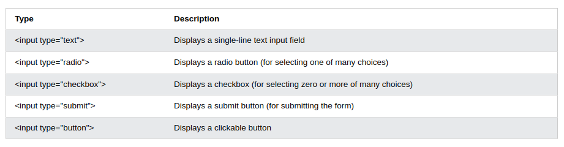

HTML Forms
Sebuah form di html digunakan untuk collect user input. Biasanya user input dikirim ke server untuk di processing
Source
Contoh form
Form Element
- Form element digunakan untuk membuat form user input
- Form element adalah sebuah container untuk different types dari input element seperti text fields, checkboxes, radio buttons, submit buttons, etc.
- Macam-macam form elements
Input Elements

HTML Input Types.
- text fields : defines a single-line input field for text input.
- label element : label tag defines a label for many form elements.
- for attribute dari label tag harus sama dengan id attribute dari input element.
- Radio buttons : mebiarkan user untuk memilih satu dari pilihan-pilihan yang disediakan.
- checkboxes : biasanya membiarkan user memilih nol atau lebih pilihan yang disediakan.
-
submit button : defines a button for submitting the form data to a form-handler.
form-handler is typically a file on the server with a script for processing input data.
form-handler is specified in the form's action
attribute.
- name attribute untuk input : kalau name attribute dihilangkan, value dari input field tidak akan dikirimkan